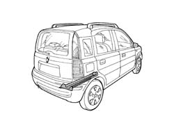
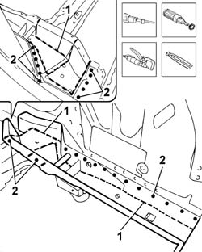
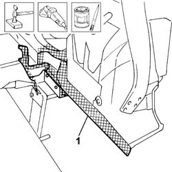
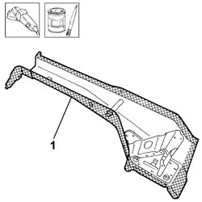
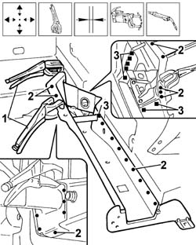

7210B60 R.R. BOOT FLOOR SIDE MEMBER
- Path
- Procedures > 72 PANELS AND FRAME > 7210 REMOVING REFITTING > 7210B structure elements-central and rear part > 7210B60 R.R. BOOT FLOOR SIDE MEMBER
- Kind
- repair procedure (removal / refitting; the operation number is the code)
- Applies to
- all engines; all production periods
- Interactive page
- https://sloeber94.github.io/elrnDB-fPnd/en/#/2753347
Applies to: all engines; all production periods
 Removing
Removing
 Refitting
Refitting7210B70 R.R. REAR TRIM (structural element)
Check if any of the connected parts are deformed by checking body alignment dimensions. Use appropriate measurement tools (reference rigs, templates or gauges).
If necessary, straighten the body before cutting the part.

Applies to: all engines; all production periods
1. Use a power saw to cut along the cutting lines illustrated.
Use a rotary brush to remove paint to gain access to the weld spots.
2. Using a chamfering machine, reduce the spot welds along the edge of the boot floor side member illustrated.
Using a hammer, chisel and pliers, remove the metal offcuts.

Applies to: all engines; all production periods
Refitting
RemovingStraighten the edges of the panel.
Use a grinding wheel to remove the spot weld residues.
Use a rotary brush to clean treated areas.
1. Apply electroweldable paint to the edges of the bodyshell which will be involved in the welding later on.

Applies to: all engines; all production periods
Use a rotary brush to remove the corrosion-proofing around the edge of the parts.
1. Apply electro-galvanizing paint to the edges in contact with the vehicle.
Using a drill, make holes in the replacement part in the area which will be involved in the MIG fill welding later on.

Applies to: all engines; all production periods
1. Position the replacement part correctly on the bodyshell and secure it using the self-locking clamps.
Check that the alignment is perfect.
2. Use a spot welder to weld the areas shown in the figure.
3. Use a spot welder to weld the areas shown.

Applies to: all engines; all production periods
Correct any deformations in the panel using a profiled stake and mallet.
Use a grinding wheel to level the welds
Use a rotary brush to clean the newly-welded areas.
Apply rust-proofing to newly-welded areas.
Seal the joint lines between the part and the car.